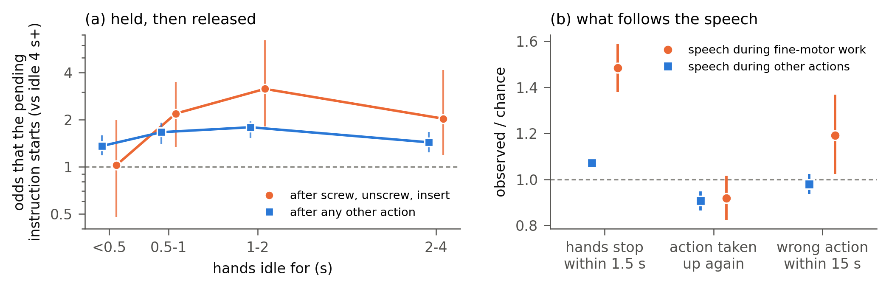
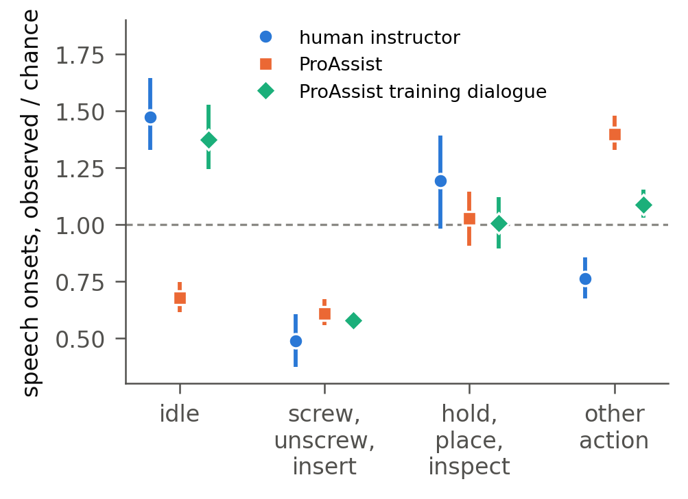
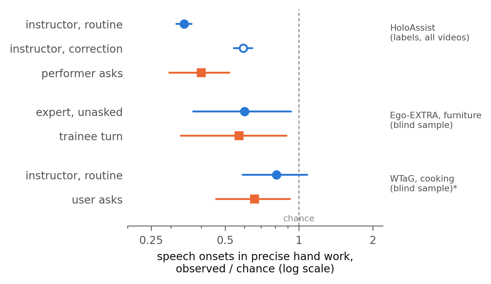
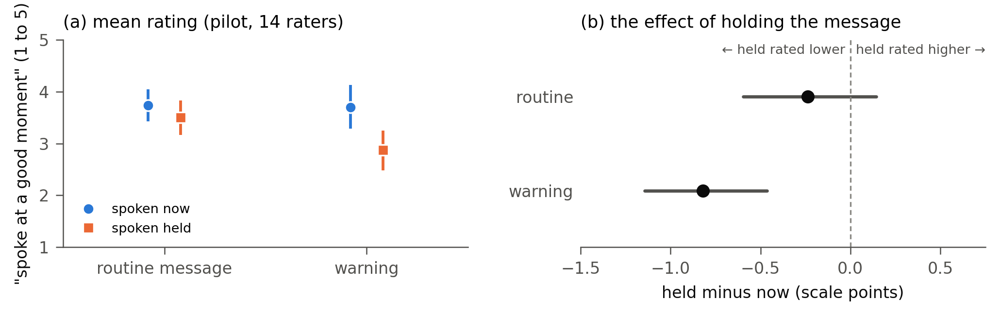

Hands before words: when should an assistant on smart glasses speak?
Human instructors who watch through a head-worn camera rarely start talking while the hands screw, unscrew or insert a part. We measure this on three datasets, read it from video, and test whether an assistant that waits in the same way is judged to speak at a better moment. It is not.
Routine instructor speech starts during screw, unscrew and insert actions at a third of the chance rate (HoloAssist, 1,454 videos).
Odds ratio for a correction during such an action: when a mistake is in progress, the instructor does not wait.
Observers did not rate a held routine message higher (5-point scale, pre-registered pilot, 14 raters). A held warning was rated clearly lower.
One minute, three timelines
A performer works through a task in HoloAssist while an instructor watches the head-camera view and talks. Below the video: what the hands are doing, what a video model reads from the frames, and when the instructor and a published assistant (ProAssist) start to speak. Click the timeline to jump.
The model curve comes from a classifier that never saw this recording session.
What we found
Instructors hold routine speech, then release it
While a next-step instruction is pending, it is most likely to start 1 to 2 seconds after the hands become free. After a screw or insert the rise comes a little later and is higher. When an instructor does speak during the action, the hands stop sooner, but we find no robust rise in mistakes.

A published assistant waits too, but not like a person
ProAssist already speaks less during screw and insert actions, because its training dialogue is placed at action ends. Its clearest difference from people is idle time: instructors talk most when the hands are idle; ProAssist talks least.

Outside HoloAssist the picture is mixed
The instructor effect appears, smaller, in furniture assembly (Ego-EXTRA), and is not clear in cooking (WTaG), where screw and insert actions are rare. The performer's own questions avoid precise hand work in all three datasets.

Waiting is not rated better
In a pre-registered study, observers rated the same message spoken during the action or held until the hands were free. They did not prefer the held routine message, and they rated a held warning clearly lower. A confirmatory round with 40 or more new raters is running.

So we report a description of human instructors and a negative result for the rule that seems to follow from it. We do not claim that an assistant should wait.
Test your own assistant
If your assistant runs on HoloAssist videos, write the times at which it starts to speak to a CSV and compare it with the human instructors of the same videos:
python -m scripts.timing_audit --speech my_assistant.csv --name "My assistant"
The tool needs only the HoloAssist annotation file. It reproduces the ProAssist numbers above from ProAssist's released outputs. The hand labels of our Ego-EXTRA and WTaG samples (times and labels, no frames) are in the release folder.
Cite
@misc{harshil2026hands,
title = {Instructors stay quiet during screw and insert actions.
Observers do not reward an assistant that does the same.},
author = {Harshil},
year = {2026},
note = {Preprint in preparation}
}